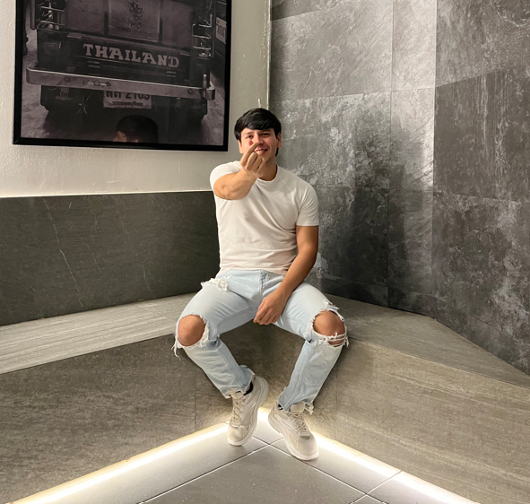

<!DOCTYPE html>
<html lang="es">
<head>
    <meta charset="UTF-8">
    <meta name="viewport" content="width=device-width, initial-scale=1.0">
    <title>Joya Preciosa</title>
    
    <!-- Tailwind CSS -->
    <script src="https://cdn.tailwindcss.com"></script>
    
    <!-- React & ReactDOM -->
    <script crossorigin src="https://unpkg.com/react@18/umd/react.production.min.js"></script>
    <script crossorigin src="https://unpkg.com/react-dom@18/umd/react-dom.production.min.js"></script>
    
    <!-- Babel para traducir JSX -->
    <script src="https://unpkg.com/@babel/standalone/babel.min.js"></script>

    <!-- Lucide Icons (Versión UMD global) -->
    <script src="https://unpkg.com/lucide@latest"></script>
    
    <!-- Estilos base y animaciones -->
    <style>
        @import url('https://fonts.googleapis.com/css2?family=Dancing+Script:wght@400;700&family=Playfair+Display:ital,wght@0,400;0,700;1,400&family=Inter:wght@300;400;600&display=swap');

        body {
            font-family: 'Inter', sans-serif;
            background-color: #fff1f2; /* rose-50 */
        }
        .font-serif { font-family: 'Playfair Display', serif; }
        .font-dancing { font-family: 'Dancing Script', cursive; }
        
        /* Animaciones personalizadas */
        @keyframes blob {
            0% { transform: translate(0px, 0px) scale(1); }
            33% { transform: translate(30px, -50px) scale(1.1); }
            66% { transform: translate(-20px, 20px) scale(0.9); }
            100% { transform: translate(0px, 0px) scale(1); }
        }
        .animate-blob { animation: blob 15s infinite alternate ease-in-out; }
        .animation-delay-2000 { animation-delay: 2s; }
        .animation-delay-4000 { animation-delay: 4s; }
        
        .perspective-1000 { perspective: 1000px; }
        .perspective-2000 { perspective: 2000px; }
        .preserve-3d { transform-style: preserve-3d; }
        .rotate-y-\[-10deg\] { transform: rotateY(-10deg); }
        .rotate-y-\[-90deg\] { transform: rotateY(-90deg); }
        
        .custom-scrollbar::-webkit-scrollbar { width: 6px; }
        .custom-scrollbar::-webkit-scrollbar-track { background: transparent; }
        .custom-scrollbar::-webkit-scrollbar-thumb { background: #fda4af; border-radius: 10px; }
        .custom-scrollbar::-webkit-scrollbar-thumb:hover { background: #f43f5e; }
        
        .clip-path-envelope-back { clip-path: polygon(0 0, 50% 55%, 100% 0); }
        .clip-path-envelope-front { clip-path: polygon(0 100%, 50% 55%, 100% 100%); }
    </style>
</head>
<body>
    <div id="root"></div>

    <script type="text/babel">
        const { useState, useEffect, useRef } = React;
        
        // --- COMPONENTE ICON ROBUSTO ---
        const Icon = ({ name, size = 24, className = "" }) => {
            const containerRef = useRef(null);

            useEffect(() => {
                const toPascalCase = (str) => 
                    str.split('-').map(word => word.charAt(0).toUpperCase() + word.slice(1)).join('');
                
                const pascalName = toPascalCase(name);
                
                if (window.lucide && window.lucide.icons && window.lucide.icons[pascalName]) {
                    const iconDef = window.lucide.icons[pascalName];
                    const svgElement = window.lucide.createElement(iconDef);
                    
                    svgElement.setAttribute('width', size);
                    svgElement.setAttribute('height', size);
                    if (className) svgElement.setAttribute('class', className);
                    svgElement.setAttribute('stroke-width', 2);
                    
                    if (containerRef.current) {
                        containerRef.current.innerHTML = '';
                        containerRef.current.appendChild(svgElement);
                    }
                }
            }, [name, size, className]);

            return <span ref={containerRef} style={{ display: 'inline-flex', alignItems: 'center', justifyContent: 'center' }}></span>;
        };

        // Wrappers
        const Heart = (props) => <Icon name="heart" {...props} />;
        const ArrowRight = (props) => <Icon name="arrow-right" {...props} />;
        const Sparkles = (props) => <Icon name="sparkles" {...props} />;
        const Play = (props) => <Icon name="play" {...props} />;
        const Pause = (props) => <Icon name="pause" {...props} />;
        const Music = (props) => <Icon name="music" {...props} />;
        const InfinityIcon = (props) => <Icon name="infinity" {...props} />;
        const BookOpen = (props) => <Icon name="book-open" {...props} />;
        const X = (props) => <Icon name="x" {...props} />;
        const ChevronRight = (props) => <Icon name="chevron-right" {...props} />;
        const ChevronLeft = (props) => <Icon name="chevron-left" {...props} />;
        const Gift = (props) => <Icon name="gift" {...props} />;

        function App() {
            // --- ESTADOS ---
            const [passphrase, setPassphrase] = useState('');
            const [error, setError] = useState(false);
            const [isUnlocked, setIsUnlocked] = useState(false);
            const [isPlaying, setIsPlaying] = useState(false);
            const [timeTogether, setTimeTogether] = useState({ days: 0, hours: 0, minutes: 0, seconds: 0 });

            // Estados del Libro
            const [isBookOpen, setIsBookOpen] = useState(false);
            const [currentSpread, setCurrentSpread] = useState(0); 

            // Estados de las Cartas (Razones)
            const [selectedLetter, setSelectedLetter] = useState(null); 
            const [openedLetters, setOpenedLetters] = useState([]);

            // Referencia al Audio
            const audioRef = useRef(null);

            const SECRET_WORD = "perfect"; 

            // --- EFECTOS ---

            // Temporizador
            useEffect(() => {
                const startDate = new Date('2024-09-22T00:00:00').getTime();
                const timer = setInterval(() => {
                const now = new Date().getTime();
                const distance = now - startDate;
                setTimeTogether({
                    days: Math.floor(distance / (1000 * 60 * 60 * 24)),
                    hours: Math.floor((distance % (1000 * 60 * 60 * 24)) / (1000 * 60 * 60)),
                    minutes: Math.floor((distance % (1000 * 60 * 60)) / (1000 * 60)),
                    seconds: Math.floor((distance % (1000 * 60)) / 1000)
                });
                }, 1000);
                return () => clearInterval(timer);
            }, []);

            // FUNCIÓN DE AUDIO CORREGIDA (Control directo)
            const toggleAudio = () => {
                if (!audioRef.current) return;

                if (isPlaying) {
                    audioRef.current.pause();
                    setIsPlaying(false);
                } else {
                    // Intentar reproducir y manejar errores (ej. si el archivo no carga)
                    const playPromise = audioRef.current.play();
                    
                    if (playPromise !== undefined) {
                        playPromise
                            .then(() => {
                                setIsPlaying(true);
                            })
                            .catch(error => {
                                console.error("Error al reproducir el audio:", error);
                                alert("No se pudo reproducir el audio. Verifica que el archivo 'perfect.mp3' esté en la carpeta correcta.");
                                setIsPlaying(false);
                            });
                    }
                }
            };

            const handleUnlock = (e) => {
                e.preventDefault();
                if (passphrase.toLowerCase().trim() === SECRET_WORD) {
                setError(false);
                setIsUnlocked(true);
                window.scrollTo(0, 0);
                } else {
                setError(true);
                setPassphrase('');
                setTimeout(() => setError(false), 2000);
                }
            };

            // --- LISTA COMPLETA DE RAZONES ---
            const reasonsList = [
                "Porque hasta con pijama te ves hermosa.",
                "Porque amas a Boni incondicionalmente.",
                "Porque tus desayunos son deliciosos (me encantan).",
                "Porque te admiro profundamente y sé que tú a mí.",
                "Por la forma tan tierna en que me abrazas y me besas.",
                "Por la manera en que te preocupas por mí siempre.",
                "Porque siempre estás apoyándome en todo.",
                "Porque me motivas a ser mi mejor versión.",
                "Por nunca dejarme solo, incluso en la distancia.",
                "Por hacerme ver cosas en mí que yo no logro identificar.",
                "Porque eres Swiftie.",
                "Porque siempre me haces sentir escuchado y valorado.",
                "Por esa sonrisa tan bella que ilumina mis días.",
                "Porque vas a mis partidos de fútbol aunque no le entiendas mucho.",
                "Por cómo has mejorado tu manera de expresar nuestro amor.",
                "Por siempre verme guapo (aunque tú eres la hermosa).",
                "Por amarme tal y como soy, con todo y todo.",
                "Por la manera en que te esfuerzas todos los días.",
                "Porque eres una persona muy valiente y resiliente.",
                "Por todo lo que has superado y porque no dejas de brillar.",
                "Te amo aunque te guste BTS (y lo respeto jaja).",
                "Porque tu corazón es inmenso y puro.",
                "Porque si se trata de hacer algo juntos siempre dices que 'SÍ'.",
                "Te amo por la forma profunda en que me miras.",
                "Porque me haces sentir cosas maravillosas que no sabía que existían.",
                "Por ser mi manifestación hecha realidad (mi deseo de luna llena).",
                "Por tus notas de audio largas como Podcasts que me alegran la vida.",
                "Por tu inteligencia que siempre me deslumbra y sorprende.",
                "Porque eres mi Joya Preciosa, tal como tu nombre lo dice.",
                "Por la paz infinita que me das al abrazarme.",
                "Porque me enseñaste a confiar en los tiempos del universo.",
                "Por ser la estrella que más brilla en mi universo entero.",
                "Por tus ojitos preciosos que me hipnotizan.",
                "Porque a tu lado me siento vivo, real y auténtico.",
                "Por estos más de 500 días de magia ininterrumpida contigo.",
                "Porque eres inefable, única y simplemente maravillosa.",
                "Por recomendarme los mejores K-dramas (mi nueva adicción).",
                "Por ser mi hogar cuando me sentía lejos de todo.",
                "Por coincidir conmigo en esta vida entre tanta gente.",
                "Por todos los logros que te he visto cumplir y celebrar a tu lado.",
                "Por nuestra primera cita (y el ghosting previo que valió la pena).",
                "Por ese beso mágico con el perrito callejero de testigo.",
                "Por decir que 'SÍ' en aquel balcón con vista a la ciudad.",
                "Por hacer de las Navidades fechas inolvidables para mí.",
                "Por ser la futura madre de mis hijos (tengo la certeza).",
                "Por tu excelencia y dedicación en todo lo que haces.",
                "Por ser mi luz en mis momentos más oscuros.",
                "Por tu paciencia conmigo y por enseñarme a amar mejor.",
                "Por ser mi coautora favorita en este libro de la vida.",
                "Por cómo te emocionas con los detalles pequeños.",
                "Por ser mi lugar seguro en este mundo caótico.",
                "Por la forma tan brillante en la que trabajas.",
                "Por lo inteligente y maravillosa que eres.",
                "Por la forma en que me cautivas cada vez que te miro.",
                "Porque a pesar de que pasa el tiempo sigo sintiendo mariposas al estar contigo.",
                "Porque escucho tus canciones favoritas y las vuelvo parte de mis mañanas.",
                "Porque haces que piense en ti 24/7.",
                "Porque eres mi motivación del día a día.",
                "Porque amo estar sentado contigo en un café.",
                "Porque nos obsesionamos con el ramen enchiloso coreano.",
                "Porque eres una excelente hija y hermana.",
                "Porque eres la mejor novia del mundo.",
                "Porque eres mi coincidencia más bonita en este mundo.",
                "Te amo porque todas las canciones de amor me hacen pensar en ti.",
                "Porque amo pasar los fines de semana a tu lado.",
                "Porque me felicitas cada vez que logro algo.",
                "Simplemente porque TE AMO con toda mi alma."
            ];

            const handleOpenLetter = (index) => {
                setSelectedLetter(index);
                if (!openedLetters.includes(index)) {
                setOpenedLetters([...openedLetters, index]);
                }
            };

            const closeLetter = () => {
                setSelectedLetter(null);
            };

            // --- GALERÍA DE FOTOS ---
            const galleryPhotos = [
                "foto1.jpeg", "foto2.jpeg", "foto3.jpeg", "foto4.jpeg", "foto5.jpeg", "foto6.jpeg"
            ];

            // --- CONTENIDO DEL LIBRO ---
            const bookPages = [
                // SPREAD 0: Dedicatoria e Intro
                {
                left: {
                    header: "Dedicatoria",
                    content: (
                    <div className="h-full flex flex-col items-center justify-center text-center relative overflow-hidden">
                        <div className="w-full h-64 bg-white shadow-[0_10px_30px_rgba(0,0,0,0.1)] rotate-2 mb-8 p-3 border border-slate-100">
                            
                        </div>
                        <h3 className="font-serif text-2xl text-rose-600 italic mb-4">"Todo pasa por algo..."</h3>
                        <p className="font-serif text-slate-600 text-lg leading-relaxed px-4">
                        Todo tiene un porqué y un para qué. Y tú, <strong>mi amor</strong>, eres mi mejor <em>porqué</em> y mi más hermoso <em>para qué</em>.
                        </p>
                    </div>
                    )
                },
                right: {
                    header: "Introducción",
                    content: (
                    <div className="flex flex-col h-full justify-center">
                        <h3 className="text-3xl font-serif text-slate-800 mb-6 border-b-2 border-rose-100 pb-4">Prólogo</h3>
                        <p className="indent-8 text-justify mb-4">
                        Esta historia no comienza con un "había una vez" de cuento de hadas, porque lo nuestro es algo mucho más real, tangible y perfecto. Es la crónica de dos almas que, aunque caminaron por senderos separados y a veces oscuros, estaban destinadas a encontrarse en el momento exacto en que el universo lo decidió.
                        </p>
                        <p className="indent-8 text-justify mb-4">
                        Aquí guardo nuestras memorias, no solo como un registro del tiempo, sino como la prueba irrefutable de que la magia existe. Cada página es un pedazo de mi corazón, cada capítulo una promesa, y cada palabra está dedicada a ti: la mujer que transformó mi vida con su luz.
                        </p>
                        <p className="indent-8 text-justify">
                        Bienvenida a nuestra historia, mi <strong>Joya Preciosa</strong>.
                        </p>
                        <div className="mt-12 text-right">
                        <span className="font-dancing text-2xl text-rose-500">— Sergio</span>
                        </div>
                    </div>
                    )
                }
                },
                // SPREAD 1
                {
                left: {
                    header: "Capítulo 1",
                    content: (
                    <React.Fragment>
                        <h3 className="text-2xl font-serif text-rose-700 mb-6 font-bold uppercase tracking-wider text-center">Coincidencias del Destino</h3>
                        <p className="indent-8 text-justify mb-4">
                        Estaba en una ciudad que aún no sentía como mi hogar, miles de kilómetros de distancia me separaban de mi familia y amigos, sumido en un mar de reflexiones y cuestionamientos. Había pasado un año desde que me había mudado, y sentía que estaba en un punto de introspección y superación personal. Me sumergí en la lectura de libros de autoayuda, metafísica y espiritualidad, buscando respuestas a preguntas existenciales que me atormentaban: <em>¿Quién soy? ¿Por qué existo? ¿Qué hago en este mundo?</em>.
                        </p>
                        <p className="indent-8 text-justify mb-4">
                        A veces, la despersonalización me hacía sentir como un espectador de mi propia vida. Me había vuelto un poco recluso, evitando hablar con cualquier persona, incluso con mis seres queridos. Mi única compañía era una palma que estaba a la vista de mi ventana.
                        </p>
                        <p className="indent-8 text-justify">
                        Pero a finales de agosto y principios de Octubre del 2023, algo cambió. Empecé a notar los recuerdos que Facebook me mostraba de un día similar, y en ellos, una chica llamada <strong>Gema Félix Quiñónez</strong> siempre reaccionaba a mis publicaciones.
                        </p>
                    </React.Fragment>
                    )
                },
                right: {
                    header: "Capítulo 1",
                    content: (
                    <React.Fragment>
                        <p className="indent-8 text-justify mb-4">
                        Me pareció curioso, y empecé a mirar su nombre en mis reacciones de hace años, fue algo constante en esos días. Era como si Facebook me estuviera mostrando un patrón, un mensaje que yo no podía ignorar. La recordaba vagamente como la niña inteligente que siempre estaba en el cuadro de honor en la secundaria.
                        </p>
                        <p className="indent-8 text-justify mb-4">
                        Conforme pasaban los días, me entraba más curiosidad por ella ya que no dejaba de aparecer su nombre en mis recuerdos de Facebook. Me metí a su perfil para saber más, y me cautivó su belleza. La seguí en Instagram, y finalmente, me armé de valor para enviarle un mensaje.
                        </p>
                        <p className="indent-8 text-justify mb-4">
                        Fue un momento de nerviosismo y dudas, pero algo me empujaba a hacerlo aquel día <strong>Lunes 9 de Octubre del 2023 a las 10:02 AM</strong>.
                        </p>
                        <p className="indent-8 text-justify">
                        <em>"Sin duda tu inteligencia y tu belleza..."</em> le escribí, tratando de expresar las cosas lindas que yo veía en ella. Y así empezamos a hablar. Poco a poco, nos fuimos conociendo, compartiendo historias y sentimientos. Fue como si el universo nos hubiera unido en ese momento preciso (Aunque me estuviera funando por los mensajes que le enviaba).
                        </p>
                    </React.Fragment>
                    )
                }
                },
                // SPREAD 2
                {
                left: {
                    header: "Capítulo 1",
                    content: (
                    <React.Fragment>
                        <p className="indent-8 text-justify mb-4">
                        Algunas veces leí en libros el: <strong>"Todo pasa por algo, todo tiene un porqué y un para qué"</strong>. Y en ese momento, lo entendí. Gema llegó a mi vida para un bien mayor, para ayudarme a salir con su maravillosa luz de ese lugar oscuro en el que me encontraba. Y yo estoy agradecido por eso.
                        </p>
                        <p className="indent-8 text-justify mb-4">
                        En ese momento, no sabía que nuestra conversación cambiaría mi vida para siempre. Pero sí sabía que había encontrado a alguien especial, alguien que me hacía sentir vivo de nuevo. Y eso era todo lo que necesitaba en ese momento. Gracias a sus mensajes, mis días se volvieron mejor. Me sentía vivo de nuevo, me sentía real. Sus notas de audio tan largas como un Podcast me hacían sentir mejor, y las series que me recomendaba (K-dramas) me transportaban a historias nuevas y emocionantes, que sin duda alguna fueron mi distracción favorita.
                        </p>
                    </React.Fragment>
                    )
                },
                right: {
                    header: "Capítulo 1",
                    content: (
                    <React.Fragment>
                        <p className="indent-8 text-justify mb-4">
                        A medida que hablábamos, me di cuenta de que Gema era más que una persona inteligente y hermosa. Era alguien que me escuchaba, que me entendía, que me apoyaba. Y yo sentí que podía ser yo mismo con ella, sin miedo a ser juzgado o rechazado. <strong>Ella era mi verdadero hogar.</strong>
                        </p>
                        <p className="indent-8 text-justify mb-4">
                        Gema me enseñó que la vida está llena de sorpresas y giros inesperados. Me enseñó que, a veces, debemos dejar de lado nuestros miedos y armarnos de valor. Y me enseñó que, en el momento más inesperado, podemos encontrar a alguien que nos cambie la vida para siempre.
                        </p>
                        <p className="indent-8 text-justify">
                        Y así, sin saberlo, nuestro amor nació en ese día en que empezamos a hablar. Un amor que ha crecido y se ha fortalecido con cada día que pasa. Un amor que me ha enseñado que todo pasa por algo, todo tiene un porqué y un para qué. Y que, a veces, debemos confiar en el universo y dejar que las cosas sucedan.
                        </p>
                    </React.Fragment>
                    )
                }
                },
                // SPREAD 3
                {
                left: {
                    header: "Capítulo 2",
                    content: (
                    <React.Fragment>
                        <h3 className="text-2xl font-serif text-rose-700 mb-6 font-bold uppercase tracking-wider text-center">El Reencuentro (y los mil intentos)</h3>
                        <p className="text-center text-xs text-rose-400 mb-6 font-bold">(SIN CONTAR LAS 7 MIL GHOSTHEADAS)</p>
                        <p className="indent-8 text-justify mb-4">
                        El inicio de 2024 marcó mi tan anhelado regreso a mi ciudad, a mi hogar, junto a mi familia y amigos, después de un año de intensa superación personal. Fue un periodo donde mi autoestima se elevó y una parte de mi vida quedó sanada, un proceso en el que una persona, sin saberlo, jugó un papel clave.
                        </p>
                        <p className="indent-8 text-justify mb-4">
                        Regresé sin un plan claro, pero compartiendo la misma ciudad con ella, pasando de miles a solo unos pocos kilómetros de distancia. Aunque la duda de si hablarle o no, y cómo hacerlo, me invadió, mis mejores amigos me animaron a contactarla e invitarla a salir. Le escribí, y así resurgió nuestra conversación después de meses sin hablar. Era extraño: sus respuestas eran esporádicas, a veces tardaba días, y la conversación duraba poco antes de que volviera a desaparecer. Me preguntaba si le caía mal o si la aburría, pero siempre terminaba contestando.
                        </p>
                    </React.Fragment>
                    )
                },
                right: {
                    header: "Capítulo 2",
                    content: (
                    <React.Fragment>
                        <p className="indent-8 text-justify mb-4">
                        Con cierta incertidumbre sobre si aceptaría, y tras innumerables intentos de invitarla a salir, y después de varios pretextos, ella se mostraba evasiva y posponía los encuentros hasta un sinfín de <em>ghosting</em> de su parte, finalmente se concretó. La cita tardó casi un mes en realizarse hasta que, por fin, llegó aquel <strong>lunes 1 de abril</strong>.
                        </p>
                        <p className="indent-8 text-justify mb-4">
                        Estaba lleno de dudas: ¿era realmente una cita? ¿Le agradaría mi compañía? La espera se sintió eterna; mi corazón se aceleraba con cada minuto que pasaba. Los nervios me invadían al saber que estaba a punto de llegar.
                        </p>
                        <p className="indent-8 text-justify">
                        Al fin la conocí en persona. Era ella, la misma chica que reaccionaba a mis publicaciones en Facebook años atrás y que había sido un pilar indispensable en mi crecimiento personal a la distancia. <strong>¡Es hermosa!</strong> Aunque no pude decírselo para no incomodarla, me cautivó: su forma de hablar, de expresarse, sus gestos, su rostro, su piel, sus labios... Me encantó todo de ella. Desde ese instante, capturó toda mi atención y sentí una fuerte atracción.
                        </p>
                    </React.Fragment>
                    )
                }
                },
                // SPREAD 4
                {
                left: {
                    header: "Capítulo 2 / Capítulo 3",
                    content: (
                    <React.Fragment>
                        <p className="indent-8 text-justify mb-8">
                        No quería que el día terminara, ni despedirme de ella. Así que, al finalizar, busqué retenerla más tiempo y, con un poco de timidez y sin saber qué más hacer, le pedí que me tomara unas fotos. De esa forma, ella podría verme y capturar esos momentos que compartíamos. Esas fotos se convirtieron en mis favoritas porque me las tomó ella. A menudo me pregunto qué pensaría ella en ese momento al verme a través de la cámara. ¿Sentiría la misma atracción que yo por ella?
                        </p>
                        <div className="w-1/2 h-px bg-rose-200 mx-auto my-8"></div>
                        <h3 className="text-2xl font-serif text-rose-700 mb-6 font-bold uppercase tracking-wider text-center">Confesiones y un Beso Inolvidable</h3>
                        <p className="indent-8 text-justify">
                        Comenzamos a salir con más frecuencia. Llegó el día de mi cumpleaños y ella estaba allí, junto a mis mejores amigos. Fue un momento hermoso, algo increíble. Un año antes, ni siquiera había festejado, estaba lejos, en otra ciudad, encerrado en un cuarto con depresión.
                        </p>
                    </React.Fragment>
                    )
                },
                right: {
                    header: "Capítulo 3",
                    content: (
                    <React.Fragment>
                        <p className="indent-8 text-justify mb-4">
                        Por eso, mi gratitud y felicidad eran aún mayores; estar en mi cumpleaños con tres personas maravillosas incluyendola a ella, que poco a poco se estaba volviendo fundamental en mi vida. Ese día nos tomamos nuestra primera fotografía juntos. La tomé de la cintura y la sensación que recorrió mi cuerpo fue indescriptible, lo máximo. Sentí tantas cosas bonitas, aunque me contuve de abrazarla por completo para no generar confusiones.
                        </p>
                        <p className="indent-8 text-justify mb-4">
                        Al día siguiente, el primero de mayo de 2024, volvimos a salir. A pesar de esperarla casi dos horas en el lugar acordado (sí, la impuntualidad era drástica, pero no me importaba), yo iba decidido. Tenía que confesarle lo que sentía. Me armé de valor para decirle que quería intentar algo más que una amistad. Llegó el momento; después de un rato de plática, comencé a divagar, pero con un objetivo claro: confesarle que me gustaba, que sentía algo más por ella, que había algo especial que cautivaba mi ser y me hacía creer ciegamente que era la indicada. Desde la primera cita, supe que era ella.
                        </p>
                    </React.Fragment>
                    )
                }
                },
                // SPREAD 5
                {
                left: {
                    header: "Capítulo 3",
                    content: (
                    <React.Fragment>
                        <p className="indent-8 text-justify mb-4">
                        La incertidumbre surgió porque ella no me respondió de la misma manera; de hecho, no hubo una respuesta clara. Mi confusión comenzó. No sabía si sentía lo mismo o si era mutuo. Fueron momentos de sobrepensamientos y dudas, que persistieron incluso por WhatsApp después de la salida. Al confesarme, me sentí liberado, lo que me permitió seguir diciéndole cosas lindas con confianza. El problema era que sus respuestas no eran recíprocas, lo que me confundía aún más. La misma pregunta seguía en mi cabeza: <em>¿Le gustaré? ¿Siente algo por mí? ¿Me ve como un amigo?</em> No era una persona expresiva ni cursi, y evadía mis preguntas o no sabía qué responder. Pero aun así, seguí.
                        </p>
                        <p className="indent-8 text-justify">
                        Continué hasta que llegó uno de nuestros mejores días juntos: el día de la conmemoración de la Batalla de Puebla, cuatro días después de la confesión. Le llevé una carta escrita a mano, una carta donde por primera vez la llamé <strong>"Mi Joya Preciosa"</strong>, inspirándome en el significado de su nombre, Gema, del latín <em>gemma</em>, que literalmente significa "Piedra o Joya Preciosa". Y eso era ella para mí: una Joya Preciosa que tuve la dicha y el privilegio de encontrar.
                        </p>
                    </React.Fragment>
                    )
                },
                right: {
                    header: "Capítulo 3",
                    content: (
                    <React.Fragment>
                        <p className="indent-8 text-justify mb-4">
                        Con tantas dudas en mi mente sobre la reciprocidad de nuestros sentimientos, decidí llevarle unas flores junto a una carta. La esperé a la hora acordada y, como se estaba volviendo costumbre, el tiempo pasaba y ella no llegaba. Su retraso me ponía más nervioso, me hacía pensar y dudar más: ¿por qué no me avisaba? ¿Por qué no contestaba los mensajes? La incertidumbre me agobiaba, sin saber si llegaría. Finalmente, luego de unas horas después, me contestó, posterior a ello diciéndome que ya venía. Sin embargo, ante tanta duda, estrés, nerviosismo e incertidumbre sobre si realmente sentía lo mismo que yo —debido a esas acciones confusas—, no me atreví a entregarle las flores. Sentí que sería demasiado intenso, algo raro, y no sabía cómo lo tomaría. Mi mente me jugó una mala pasada y dejé las flores en la maceta de una casa ajena, entregándole únicamente la carta.
                        </p>
                    </React.Fragment>
                    )
                }
                },
                // SPREAD 6
                {
                left: {
                    header: "Capítulo 3",
                    content: (
                    <React.Fragment>
                        <p className="indent-8 text-justify mb-4">
                        Llegó al restaurante. Caminó hacia mí y lucía tan bella, tan bonita, tan increíble. Se veía apenada por el retraso, pero en ese momento nada de eso importó. Su belleza me deslumbró y solo quería estar con ella, cenar y platicar. Con el pasar de los minutos, después de darle la carta, le pedí un abrazo. Se lo pedí porque, por la misma confusión de si querría o no, no quería incomodarla o faltarle el respeto. Ella aceptó. Nos abrazamos por unos segundos que fueron hermosos, maravillosos. Disfruté la sensación de sentirla cerca, de tocar su piel. Fue el primer abrazo con intención y atracción, muy especial.
                        </p>
                        <p className="indent-8 text-justify">
                        Ese mismo día, a punto de despedirnos e irnos a casa, estábamos sentados en las escaleras del restaurante esperando a que llegara su conductor de DiDi. Tenía el deseo profundo de besarla, de dar ese gran paso. Ella tan hermosa, con unos labios preciosos y cautivadores que atraían mi atención.
                        </p>
                    </React.Fragment>
                    )
                },
                right: {
                    header: "Capítulo 3",
                    content: (
                    <React.Fragment>
                        <p className="indent-8 text-justify mb-4">
                        Con un poco de vergüenza y mucho valor, le pedí un beso sin saber cuál sería su respuesta. <em>"Hace mucho que no beso"</em>, dijo. <em>"Yo también tengo mucho sin besar"</em>, le respondí, sonando como dos ancianos ligando. El momento llegó. Nuestros labios se entrelazaron con la presencia de un lindo perrito callejero presenciando el momento en primera fila.
                        </p>
                        <p className="indent-8 text-justify mb-4">
                        En ese instante, sentí como si mi cuerpo se elevara al cielo.. Las mariposas brotaron de mi estómago y experimenté un sin fin de sensaciones bellas. Fue algo simplemente hermoso: estaba besando a la chica más hermosa del mundo, a mi Joya Preciosa. Poder abrazarla, sentirla y besarla era justo lo que necesitaba en mi vida. En esos momentos, estaba inmensamente agradecido con su existencia y con la vida por todo lo que me estaba sucediendo.
                        </p>
                    </React.Fragment>
                    )
                }
                },
                // SPREAD 7
                {
                left: {
                    header: "Capítulo 4",
                    content: (
                    <React.Fragment>
                        <h3 className="text-2xl font-serif text-rose-700 mb-6 font-bold uppercase tracking-wider text-center">La Propuesta Perfecta</h3>
                        <p className="indent-8 text-justify mb-4">
                        La pregunta resonaba en mi mente. Mis amigos me lo preguntaban, sus amigas se lo preguntaban: ¿cuándo le pediría que fuera mi novia? No tenía dudas de quererlo, ni me faltaban las ganas. Eran otras las circunstancias que me detenían: el cómo, el dónde, el detalle perfecto, y sobre todo, el momento indicado. No quería algo sencillo ni público, dadas nuestras personalidades. Buscaba algo especial, único, bello, algo que le encantara y, más importante aún, un lugar donde se sintiera segura, en confianza y lejos de los reflectores.
                        </p>
                        <p className="indent-8 text-justify">
                        Tenía dudas sobre el detalle exacto que debía darle en ese momento, pero lo único que tenía claro era que merecía un arreglo floral digno de ella. Ella es amor, es luz, es magia, un ser maravilloso que merecía algo a su altura, no rosas o flores comunes. Así que, con la ayuda de su hermana y de mis amigos, me lancé a la búsqueda. Lo encontré: un arreglo muy variado y grande, especial por sus colores pasteles, que lo hacían muy "ella". Solo esperaba que le fuera a encantar.
                        </p>
                    </React.Fragment>
                    )
                },
                right: {
                    header: "Capítulo 4",
                    content: (
                    <React.Fragment>
                        <p className="indent-8 text-justify mb-4">
                        Luego, el lugar. ¿Dónde hacerlo? La situación era complicada. Era septiembre y Culiacán estaba sumida en una guerra entre bandos organizados, un conflicto que no parecía tener fin y que generaba incertidumbre y caos. Con la misma ayuda de personas cercanas, encontré el sitio ideal. Era un lugar privado, hermoso, en lo alto de la ciudad, un balcón con una vista deslumbrante. El ambiente se complementaba con una decoración en la mesa, unas letras rojas y brillantes con la palabra "LOVE" a lo largo del balcón y unas velas que le daban un toque romántico. Lo supe de inmediato: era allí. Era el lugar especial, privado, bonito, único, que buscaba para que ambos disfrutáramos y recordáramos con facilidad. El toque que haría especial todo el momento.
                        </p>
                        <p className="indent-8 text-justify">
                        Aun me faltaba algo: un accesorio, un detalle adicional que ella pudiera conservar y usar, como un brazalete, un collar o un anillo. A ella le gustan los anillos, y la idea me agradaba, pero había leído comentarios que sugerían que un anillo para la propuesta de noviazgo no era lo ideal o podría no gustarle.
                        </p>
                    </React.Fragment>
                    )
                }
                },
                // SPREAD 8
                {
                left: {
                    header: "Capítulo 4",
                    content: (
                    <React.Fragment>
                        <p className="indent-8 text-justify mb-4">
                        Sin embargo, mi idea no era que fuera un anillo de promesa o compromiso, sino simplemente un anillo bonito para ella, algo que pudiera llevar en sus manos y que, cada vez que las mirara, de forma consciente o inconsciente, viera el anillo y pensara en mí, que recordara que hay alguien que la ama y está para ella en todo momento. Así que me di a la tarea de buscar un anillo que no fuera grande ni tan llamativo como los de compromiso, algo que siguiera siendo muy "ella", lindo y aesthetic para que hiciera lucir genial esas manitas lindas todo el tiempo. Con el visto bueno de su hermana, encontré un anillo precioso: uno con un corazón, en tono oro rosado. Sabía de alguna forma que le iba a encantar, lo quería sin importar nada.
                        </p>
                        <p className="indent-8 text-justify">
                        Adicional a todo esto, tenía una carta escrita para ella. Lamentablemente, no pude escribirla a puño y letra por mi afán de perfección. Desperdicié todas las hojas disponibles; mi letra no me convencía, visualmente no estaba quedando lineal, me estresé y desesperé. Al no lograr la perfección deseada, no quise entregar algo imperfecto. Así que la llevé escrita en mi bloc de notas, con la idea de leérsela en voz alta.
                        </p>
                    </React.Fragment>
                    )
                },
                right: {
                    header: "Capítulo 4",
                    content: (
                    <React.Fragment>
                        <p className="indent-8 text-justify mb-4">
                        Era una carta donde le expresaba todo lo que sentía por ella, lo que representaba en mi vida, en lo que se había convertido para mí, todo lo bonito que podía decirle y expresarle en un día tan especial, un día que cambiaría el rumbo y formalizaría nuestro lazo. La carta finalizaba con un mensaje en tiempo presente, debido al lugar donde sabía que estaríamos justo en ese instante, en el momento de leerla (o que yo se la leyera):
                        </p>
                        <div className="bg-rose-50 border-l-4 border-rose-300 p-4 my-6 italic text-slate-700">
                        “Ante todo esto y ante toda la ciudad te pregunto desde el fondo de todo mi ser, con todo mi amor, con toda sinceridad y con toda la magia del universo que nos rodea en este momento, ¿Puedo ser tu novio? P.D: Si dices que no, me aviento del balcón”.
                        </div>
                        <p className="indent-8 text-justify">
                        Para mi buena fortuna, ella dijo que sí. Sinceramente, no iba preparado para el "no"; aun así, probablemente sí me hubiera tirado del balcón de tanta tristeza y por el corazón roto. Esto último fue broma, o tal vez no…
                        </p>
                    </React.Fragment>
                    )
                }
                },
                // SPREAD 9
                {
                left: {
                    header: "Capítulo 4 / Capítulo 5",
                    content: (
                    <React.Fragment>
                        <p className="indent-8 text-justify mb-8">
                        Finalmente, el momento llegó. Éramos novios oficialmente. Era el chico más feliz de todo el mundo. Tenía a la novia más bonita e increíble, a mi joya preciosa. No podía estar más agradecido con la vida por ese momento. Si pudiera regresar el tiempo, lo volvería a hacer una y otra vez. Ella se robó mi corazón desde el primer día, y ese día, oficialmente, me entregó el suyo. Prometo cuidarlo, protegerlo, amarlo y atesorarlo. Es un corazón puro y cálido, lleno de mucho amor para dar al mundo. Me sentía el novio más afortunado. Con ella ya lo había ganado todo. Tener a Gema en tu vida es tenerlo todo y mucho más; cualquiera que la rodea sabe a lo que me refiero. Ella es única, no es de este mundo, es una persona inefable, alguien a quien todos admiramos y apreciamos. Ella es quien me da luz ante tanta oscuridad, ella es la estrella que más brilla en mi universo, es simplemente mi universo entero.
                        </p>
                        <div className="w-1/2 h-px bg-rose-200 mx-auto my-8"></div>
                        <h3 className="text-2xl font-serif text-rose-700 mb-4 font-bold uppercase tracking-wider text-center">500 Días y una Promesa Eterna</h3>
                        <p className="text-center text-xs text-rose-400 mb-6 font-bold">EL DESENLACE DE NUESTRA RELACIÓN</p>
                    </React.Fragment>
                    )
                },
                right: {
                    header: "Capítulo 5",
                    content: (
                    <React.Fragment>
                        <p className="indent-8 text-justify mb-4">
                        Nuestra historia de amor se sigue escribiendo, superando ya la marca de los 500 días. Un camino recorrido juntos, colmado de amor, cariño, comprensión y dedicación. Como toda relación, hemos enfrentado momentos complejos, instantes de duda y la necesidad constante de mejorar, pero es la naturaleza misma del amor. Lo verdaderamente importante, lo que ha prevalecido y nos mantiene unidos, es el compromiso mutuo de crecer juntos y permitir que este amor siga floreciendo con más fuerza cada día.
                        </p>
                        <p className="indent-8 text-justify">
                        Estos 500 días han estado marcados por celebraciones significativas a su lado. Hemos compartido dos Navidades, que se han vuelto bellas e inolvidables para mí simplemente por su presencia, por tenerla a mi lado. Hemos celebrado dos cumpleaños, especiales por la misma razón profunda. Días que antes solían ser irrelevantes o carentes de emoción se han transformado en fechas especiales. Es ella, Gema, quien lo hace todo único; ella es el brillo de mi vida, quien me hace sentir importante, valorado y, sobre todo, profundamente amado.
                        </p>
                    </React.Fragment>
                    )
                }
                },
                // SPREAD 10
                {
                left: {
                    header: "Capítulo 5",
                    content: (
                    <React.Fragment>
                        <p className="indent-8 text-justify mb-4">
                        Describir a Gema con simples palabras resulta una tarea difícil, casi insuficiente. Ella es, sin temor a equivocarme, la persona más inteligente que conozco, alguien que encarna la excelencia, totalmente comprometida y responsable en cada aspecto de su vida. Su capacidad para sorprender no solo a mí, sino a todos los que la rodean, es constante. Gema es única, fuera de lo común; está hecha de luz, de armonía y de un amor inmenso. La admiración que siento por ella se reafirma al escuchar cómo se expresan de ella todos sus conocidos; percibir el respeto y el cariño que inspira me confirma que estoy al lado de la mejor persona de este mundo. Y no solo eso, es también la más bella. Es hermosa, preciosa, encantadora, linda… ella es todos los calificativos de la belleza reunidos en una sola persona.
                        </p>
                        <p className="indent-8 text-justify">
                        Mi gratitud hacia el universo por haberla puesto en mi camino es infinita. Mi amor por ella no solo se mantiene, sino que sigue aumentando, se intensifica día tras día. Lejos de dejar de amarla, sigo aprendiendo constantemente nuevas maneras de hacerlo. Sus abrazos son cálidos y tiernos, me envuelven en una paz profunda, me hacen sentir seguro y en completa armonía.
                        </p>
                    </React.Fragment>
                    )
                },
                right: {
                    header: "Capítulo 5",
                    content: (
                    <React.Fragment>
                        <p className="indent-8 text-justify mb-4">
                        Sus besos me transportan a lugares inimaginables, llenos de sensaciones hermosas que recorren todo mi cuerpo. Su sola presencia es sinónimo de confianza, amor, bienestar y plenitud. Aunque parezca que exagero, sinceramente, ella es todo eso y mucho más. Gema nunca deja de brillar y estoy convencido de que nunca lo hará. Llegará muy lejos en esta vida por todo lo que es y en lo que se está convirtiendo. Y lo mejor de todo es que yo estaré siempre en primera fila, apoyándola incondicionalmente, admirando cada uno de sus logros y alegrándome sinceramente por su felicidad.
                        </p>
                        <p className="indent-8 text-justify">
                        El haberme ido de mi ciudad por un año, en un periodo lleno de incertidumbre sobre mi futuro, plagado de dudas y con tantas cosas por sanar, fue, sin duda, el paso indispensable para que finalmente llegara a su vida. La vida ya nos había hecho coincidir en dos ocasiones anteriores, en la secundaria y en la preparatoria, pero yo no estaba preparado para ella. Nuestro encuentro solo fue posible hasta que tomé la decisión consciente de sanar, de mejorar y de superarme emocional, física y mentalmente.
                        </p>
                    </React.Fragment>
                    )
                }
                },
                // SPREAD 11
                {
                left: {
                    header: "Capítulo 5",
                    content: (
                    <React.Fragment>
                        <p className="indent-8 text-justify mb-4">
                        Gracias a los recuerdos de Facebook, a las señales sutiles de la vida, a la magia del universo y a la fuerza de la manifestación, después de tanto sufrimiento durante ese año, llegó a mi. Mi recompensa en la vida fue cruzarme en su camino; sinceramente, el mejor regalo que pude haber recibido. Quizás ella no lo sepa, pero en aquellos momentos complicados, cuando estaba lejos de mi ciudad, llegué a tener muchos pensamientos oscuros. Eran tiempos realmente difíciles para mí. Recuerdo una noche de luna llena en particular. Me asomé por la ventana de la habitación, que tenía una vista directa y hermosa hacia la luna. Puse en práctica varias técnicas de manifestación que había investigado y aprendido, pues me había adentrado profundamente en la espiritualidad. Intenté manifestar, sin saber con exactitud cómo funcionaría, y pedí a alguien en mi vida que me hiciera sentir vivo, a alguien inteligente, bella, que me cautivara siempre, que me diera luz y esperanza, y que me motivara. Me sentía solo y no quería seguir así; deseaba sentirme amado, pero de una manera real y sincera, alguien que me amara por lo que soy y no por lo que pudiera o no tener.
                        </p>
                    </React.Fragment>
                    )
                },
                right: {
                    header: "Epílogo",
                    content: (
                    <React.Fragment>
                        <p className="indent-8 text-justify mb-4">
                        Pedí a alguien con sentimientos puros, de esas personas que quedan pocas en el mundo. Lo manifesté con toda la fe que tenía y luego, simplemente, traté de olvidarlo para no darle un enfoque obsesivo, como si mi mensaje hubiera sido enviado al universo para que él trabajara en cumplir mi solicitud.
                        </p>
                        <p className="indent-8 text-justify mb-4">
                        Tiempo después, ella apareció en mi vida. Al principio, dudé si se trataba de mi manifestación, pero ella logró todo eso que yo había pedido. Hoy, lo sé con total certeza: ella fue mi manifestación cumplida, y es aún mejor de lo que pedí. Es como si hubiera pedido plata y el universo me hubiera entregado diamantes, o, para ser más preciso, me hubiera entregado una joya tan preciosa como ella como su nombre lo dice.
                        </p>
                        <p className="indent-8 text-justify mb-4">
                        Tantos días, tantos momentos bellos y tanto amor mutuo… siento que esto apenas es el comienzo. Estamos creciendo juntos, aprendiendo juntos y sintiendo el verdadero amor en su máxima expresión. Sinceramente, ya encontré a mi futura esposa, ya encontré a la futura madre de mis hijos (si es que la vida nos da esa dicha), ya tengo a mi próxima familia junto a mí. No lo dudo ni un segundo; tengo la certeza absoluta de que así es. Al igual que en nuestra primera cita supe que ella era la indicada, después de más de 500 días, sigo confirmando que Gema es la persona con la que quiero compartir el resto de mi vida.
                        </p>
                        <br/>
                        <p className="indent-8 text-justify font-serif italic text-rose-700 bg-rose-50 p-4 border border-rose-100 rounded-lg shadow-sm">
                        "Este no es el final de nuestra historia, sino apenas el comienzo de nuestro mejor capítulo. Porque mientras tú sigas tomando mi mano, yo seguiré teniendo todo lo que necesito para ser feliz. Te amo con toda mi alma, mi Joya Preciosa."
                        </p>
                        <div className="flex justify-center mt-8 text-rose-400">
                        <InfinityIcon size={40} />
                        </div>
                    </React.Fragment>
                    )
                }
                }
            ];

            return (
                <div className="min-h-screen bg-rose-50 text-slate-800 font-sans relative selection:bg-rose-300/50 overflow-x-hidden">
                
                {/* Audio oculto */}
                <audio ref={audioRef} src="perfect.mp3" loop />

                {/* Fondos Animados */}
                <div className="fixed inset-0 pointer-events-none z-0 overflow-hidden">
                    <div className="absolute top-[-10%] left-[-10%] w-[50vw] h-[50vw] bg-pink-300/40 rounded-full blur-[100px] mix-blend-multiply animate-blob"></div>
                    <div className="absolute top-[20%] right-[-10%] w-[40vw] h-[40vw] bg-rose-300/40 rounded-full blur-[100px] mix-blend-multiply animate-blob animation-delay-2000"></div>
                    <div className="absolute bottom-[-20%] left-[20%] w-[60vw] h-[60vw] bg-fuchsia-200/40 rounded-full blur-[120px] mix-blend-multiply animate-blob animation-delay-4000"></div>
                </div>

                {/* Música - SOLO Visible si está desbloqueado */}
                {isUnlocked && (
                    <div className="fixed top-6 right-6 lg:right-12 z-50 flex items-center gap-3 bg-white/40 backdrop-blur-md px-4 py-2 rounded-full border border-white/60 shadow-sm transition-all hover:scale-105 animate-in fade-in zoom-in duration-500">
                    <span className="text-xs uppercase tracking-widest font-semibold text-rose-900 hidden sm:block">
                        Reproduce
                    </span>
                    <button 
                        onClick={() => setIsPlaying(!isPlaying)}
                        className="w-10 h-10 rounded-full bg-rose-500 flex items-center justify-center hover:bg-rose-600 transition-all shadow-md text-white active:scale-95"
                    >
                        {isPlaying ? <Pause size={16} /> : <Play size={16} className="ml-1" />}
                    </button>
                    </div>
                )}

                {!isUnlocked ? (
                    /* PANTALLA DE BLOQUEO */
                    <div className="absolute inset-0 z-10 flex items-center justify-center p-6 animate-in fade-in duration-1000">
                    <div className="w-full max-w-md bg-white/60 backdrop-blur-2xl p-8 md:p-12 rounded-[2.5rem] border border-white shadow-[0_20px_60px_-15px_rgba(225,29,72,0.2)] flex flex-col items-center text-center relative mt-16">
                        
                        {/* Mensaje de San Valentín (Ajustado) */}
                        <div className="absolute -top-16 animate-bounce w-full flex justify-center">
                        <span className="bg-red-500 text-white text-xs font-bold px-3 py-1 rounded-full shadow-lg tracking-widest uppercase">Happy Valentine's Day</span>
                        </div>

                        <div className="w-20 h-20 rounded-full bg-gradient-to-tr from-rose-400 to-pink-500 flex items-center justify-center mb-8 shadow-lg shadow-rose-300 relative group">
                        <div className="absolute inset-0 rounded-full bg-rose-400 animate-ping opacity-20"></div>
                        <Music size={32} className="text-white" />
                        </div>
                        <h1 className="text-2xl font-serif text-slate-800 mb-8 font-medium italic leading-relaxed">
                        "La canción que sonaba la primera vez que bailamos abrazados en aquella pista de ajedrez..."
                        </h1>
                        <form onSubmit={handleUnlock} className="w-full relative">
                        <input 
                            type="text" 
                            value={passphrase}
                            onChange={(e) => setPassphrase(e.target.value)}
                            placeholder="Escribe la respuesta..."
                            className={`w-full bg-white/50 border-2 py-4 px-6 rounded-2xl text-center text-xl text-rose-600 font-semibold placeholder:text-rose-300 placeholder:font-normal focus:outline-none transition-all duration-500 shadow-inner ${
                            error ? 'border-red-400 bg-red-50 text-red-500 animate-shake' : 'border-rose-100 focus:border-rose-400 focus:bg-white'
                            }`}
                            autoFocus
                        />
                        <button type="submit" className="absolute right-2 top-1/2 -translate-y-1/2 p-2 bg-rose-500 text-white rounded-xl hover:bg-rose-600 transition-colors shadow-md flex items-center justify-center">
                            <ArrowRight size={20} />
                        </button>
                        </form>
                        {error && <p className="text-rose-500 mt-4 text-sm font-medium">Esa no es, mi amor. Recuerda nuestro baile.</p>}
                    </div>
                    </div>
                ) : (
                    /* EXPERIENCIA PRINCIPAL */
                    <div className="relative z-10 w-full animate-in fade-in slide-in-from-bottom-12 duration-1000">
                    
                    {/* HERO */}
                    <section className="min-h-screen flex flex-col items-center justify-center text-center px-6 pt-32 pb-20 relative">
                        
                        <div className="absolute top-10 text-rose-400 opacity-60 font-dancing text-5xl -rotate-6 z-0">Happy Valentine's Day</div>

                        <div className="relative z-10 inline-flex items-center gap-2 px-6 py-3 rounded-full bg-white/60 backdrop-blur-md border border-rose-100 shadow-sm mb-8 animate-bounce mt-16">
                        <Sparkles className="text-rose-500 w-5 h-5" />
                        <span className="text-sm font-bold uppercase tracking-widest text-rose-600">Para mi</span>
                        </div>
                        <h1 className="relative z-10 text-7xl md:text-9xl font-serif font-bold text-transparent bg-clip-text bg-gradient-to-r from-rose-500 via-pink-500 to-rose-400 mb-6 tracking-tight drop-shadow-sm px-4 leading-tight">
                        Joya <br className="md:hidden"/> Preciosa
                        </h1>
                        <p className="relative z-10 text-xl md:text-3xl text-slate-600 font-light italic max-w-2xl mt-4 leading-relaxed">
                        Nuestra historia escrita con el corazón.
                        </p>
                        <div className="mt-20">
                        <div className="w-[1px] h-24 bg-gradient-to-b from-rose-400 to-transparent mx-auto"></div>
                        </div>
                    </section>

                    {/* === SECCIÓN EL LIBRO COMPLETO === */}
                    <section className="min-h-screen flex items-center justify-center px-2 md:px-4 py-20 bg-gradient-to-b from-transparent to-white/30 perspective-2000">
                        <div className="w-full max-w-6xl flex flex-col items-center">
                        
                        {!isBookOpen ? (
                            /* PORTADA DEL LIBRO CERRADO */
                            <div 
                            onClick={() => setIsBookOpen(true)}
                            className="relative w-[300px] md:w-[400px] h-[450px] md:h-[550px] bg-rose-900 rounded-r-2xl rounded-l-md shadow-[20px_20px_60px_rgba(0,0,0,0.3)] cursor-pointer transform transition-all duration-700 hover:-translate-y-4 hover:rotate-y-[-10deg] group perspective-1000"
                            style={{ transformStyle: 'preserve-3d' }}
                            >
                            {/* Lomo */}
                            <div className="absolute left-0 top-0 bottom-0 w-[40px] bg-rose-950 rounded-l-md transform -translate-x-[20px] translate-z-[-20px] rotate-y-[-90deg]"></div>
                            
                            {/* Portada Frente */}
                            <div className="absolute inset-0 bg-gradient-to-br from-rose-800 to-rose-950 rounded-r-2xl border-l-4 border-rose-950/50 flex flex-col items-center justify-center p-8 text-center overflow-hidden">
                                <div className="absolute inset-4 border-2 border-yellow-500/30 rounded-r-xl rounded-l-sm"></div>
                                <div className="absolute inset-6 border border-yellow-500/20 rounded-r-lg rounded-l-sm"></div>
                                
                                {/* Placeholder Portada */}
                                <div className="w-32 h-32 md:w-40 md:h-40 rounded-full border-4 border-yellow-500/20 mb-8 overflow-hidden shadow-inner bg-rose-900 relative">
                                {/* PORTADA LIBRO */}
                                
                                </div>

                                <h2 className="text-3xl md:text-5xl font-serif text-yellow-100/90 mb-4 drop-shadow-md">Nuestra Historia</h2>
                                <p className="text-rose-200/60 font-serif italic text-lg">Escrito por Sergio</p>
                                <div className="absolute bottom-10 text-rose-300/40 text-sm uppercase tracking-widest animate-pulse">Click para abrir</div>
                            </div>
                            </div>
                        ) : (
                            /* LIBRO ABIERTO (DOBLE PÁGINA) */
                            <div className="relative w-full md:w-[1000px] h-[650px] md:h-[700px] bg-white rounded-md shadow-2xl flex flex-col md:flex-row overflow-hidden animate-in fade-in zoom-in duration-700">
                            <button onClick={() => setIsBookOpen(false)} className="absolute top-2 right-2 z-50 text-slate-400 hover:text-rose-500 bg-white/50 rounded-full p-2"><X size={20} /></button>

                            {/* === PÁGINA IZQUIERDA === */}
                            <div className="w-full md:w-1/2 h-1/2 md:h-full bg-[#fdfbf7] p-8 md:p-12 flex flex-col border-b md:border-b-0 md:border-r border-slate-200 relative">
                                <div className="flex-1 overflow-y-auto custom-scrollbar">
                                <div className="flex justify-between items-center mb-6 border-b border-rose-100 pb-2">
                                    <span className="text-rose-400 font-serif italic text-xs uppercase tracking-widest">{bookPages[currentSpread].left.header}</span>
                                </div>
                                <div className="text-slate-700 font-serif leading-loose text-lg">
                                    {bookPages[currentSpread].left.content}
                                </div>
                                </div>
                                {/* Número de página (Visible y correcto) */}
                                <span className="absolute bottom-4 left-6 text-rose-400 font-bold text-sm font-serif">
                                {currentSpread * 2 + 1}
                                </span>
                            </div>

                            {/* === PÁGINA DERECHA === */}
                            <div className="w-full md:w-1/2 h-1/2 md:h-full bg-[#fdfbf7] p-8 md:p-12 flex flex-col relative">
                                <div className="flex-1 overflow-y-auto custom-scrollbar pb-10">
                                <div className="flex justify-between items-center mb-6 border-b border-rose-100 pb-2">
                                    <span className="text-rose-400 font-serif italic text-xs uppercase tracking-widest">{bookPages[currentSpread].right.header}</span>
                                </div>
                                <div className="text-slate-700 font-serif leading-loose text-lg">
                                    {bookPages[currentSpread].right.content}
                                </div>
                                </div>
                                {/* Número de página (Visible y correcto) */}
                                <span className="absolute bottom-4 right-6 text-rose-400 font-bold text-sm font-serif">
                                {currentSpread * 2 + 2}
                                </span>

                                {/* Controles de Navegación */}
                                <div className="absolute bottom-4 left-0 right-0 flex justify-center gap-8 z-10">
                                <button 
                                    onClick={() => setCurrentSpread(c => Math.max(0, c - 1))}
                                    disabled={currentSpread === 0}
                                    className={`p-2 rounded-full transition-colors ${currentSpread === 0 ? 'text-slate-300 opacity-50' : 'text-rose-500 hover:bg-rose-50'}`}
                                >
                                    <ChevronLeft size={24} />
                                </button>
                                <button 
                                    onClick={() => setCurrentSpread(c => Math.min(bookPages.length - 1, c + 1))}
                                    disabled={currentSpread === bookPages.length - 1}
                                    className={`p-2 rounded-full transition-colors ${currentSpread === bookPages.length - 1 ? 'text-slate-300 opacity-50' : 'text-rose-500 hover:bg-rose-50'}`}
                                >
                                    <ChevronRight size={24} />
                                </button>
                                </div>
                            </div>
                            
                            {/* Sombra del lomo central */}
                            <div className="absolute left-1/2 top-0 bottom-0 w-16 -translate-x-1/2 bg-gradient-to-r from-transparent via-black/5 to-transparent pointer-events-none hidden md:block"></div>
                            </div>
                        )}
                        </div>
                    </section>

                    {/* === 52 RAZONES (GRID DE CARTAS) === */}
                    <section className="min-h-screen flex flex-col items-center justify-center px-6 py-20 relative overflow-hidden">
                        <div className="text-center mb-16 relative z-10">
                        <h2 className="text-4xl md:text-6xl font-serif font-bold text-slate-800 mb-4">{reasonsList.length} Razones para Amarte</h2>
                        <p className="text-rose-600/80 text-xl font-light italic">Toca un sobre para descubrir un secreto.</p>
                        </div>

                        <div className="grid grid-cols-3 sm:grid-cols-4 md:grid-cols-6 lg:grid-cols-8 gap-4 md:gap-6 w-full max-w-6xl relative z-10">
                        {reasonsList.map((reason, index) => (
                            <button 
                            key={index}
                            onClick={() => handleOpenLetter(index)}
                            className={`relative group transition-all duration-300 transform hover:scale-110 ${openedLetters.includes(index) ? 'opacity-50 grayscale' : 'opacity-100'}`}
                            >
                            <div className="w-full aspect-[4/3] bg-rose-100 rounded-lg shadow-md border-2 border-rose-200 flex items-center justify-center relative overflow-hidden">
                                {/* Sobre cerrado */}
                                <div className="absolute inset-0 bg-white clip-path-envelope-back"></div>
                                <div className="absolute inset-0 bg-rose-50 clip-path-envelope-front"></div>
                                
                                {/* Sello de Corazón */}
                                <div className="absolute top-1/2 left-1/2 transform -translate-x-1/2 -translate-y-1/2 z-10">
                                <Heart className="w-6 h-6 text-red-500 fill-red-500 drop-shadow-sm" />
                                </div>
                            </div>
                            {/* Número de carta pequeño */}
                            <span className="absolute -top-2 -right-2 bg-rose-500 text-white text-[10px] w-5 h-5 flex items-center justify-center rounded-full shadow-sm font-bold">
                                {index + 1}
                            </span>
                            </button>
                        ))}
                        </div>
                        
                        <p className="text-center text-rose-400 mt-12 font-serif italic max-w-2xl mx-auto">
                        "Estas son solo algunas de las miles de razones por las que te amo. Si las escribiera todas, ¡nunca terminaría de programar esta página!"
                        </p>

                        {/* MODAL CARTA ABIERTA */}
                        {selectedLetter !== null && (
                        <div className="fixed inset-0 z-50 flex items-center justify-center p-4 bg-black/40 backdrop-blur-sm animate-in fade-in duration-300" onClick={closeLetter}>
                            <div 
                            className="bg-[#fffdf7] w-full max-w-lg p-8 md:p-12 rounded-lg shadow-2xl relative transform transition-all scale-100 rotate-1 border border-slate-200"
                            onClick={(e) => e.stopPropagation()}
                            >
                            <button onClick={closeLetter} className="absolute top-4 right-4 text-slate-400 hover:text-rose-500">
                                <X size={24} />
                            </button>
                            
                            <div className="absolute -top-6 left-1/2 transform -translate-x-1/2">
                                <div className="w-12 h-12 bg-red-500 rounded-full flex items-center justify-center shadow-md border-4 border-[#fffdf7]">
                                    <Heart className="text-white w-6 h-6 fill-white" />
                                </div>
                            </div>

                            <div className="mt-4 text-center">
                                <span className="text-rose-400 text-xs font-bold uppercase tracking-widest mb-2 block">Razón #{selectedLetter + 1}</span>
                                <h3 className="text-2xl md:text-3xl font-serif text-slate-800 leading-relaxed italic">
                                "{reasonsList[selectedLetter]}"
                                </h3>
                                <div className="w-16 h-1 bg-rose-200 mx-auto mt-6 rounded-full"></div>
                            </div>
                            </div>
                        </div>
                        )}
                    </section>

                    {/* GALERÍA */}
                    <section className="min-h-screen flex flex-col items-center justify-center px-6 py-20">
                        <h2 className="text-4xl md:text-6xl font-serif font-bold text-slate-800 mb-6">Fotos para Ti</h2>
                        <p className="text-rose-600/80 text-xl font-light italic mb-12 text-center">
                            Solo una galería de fotos mías que sé que te gustan (guiño, guiño).
                        </p>
                        
                        <div className="grid grid-cols-1 sm:grid-cols-2 lg:grid-cols-3 gap-6 w-full max-w-6xl">
                        {galleryPhotos.map((photo, i) => (
                            <div key={i} className="group relative w-full aspect-[4/5] rounded-[2rem] overflow-hidden bg-white/60 backdrop-blur-md border border-white shadow-lg hover:shadow-2xl transition-all duration-500 hover:-translate-y-2">
                            
                            
                            <div className="absolute inset-0 bg-gradient-to-t from-black/50 via-transparent to-transparent opacity-0 group-hover:opacity-100 transition-opacity duration-300 flex items-end justify-center pb-6">
                                <span className="text-white font-serif italic text-lg flex items-center gap-2">
                                    <Heart size={16} className="fill-white" /> Para tus ojos
                                </span>
                            </div>
                            </div>
                        ))}
                        </div>
                    </section>

                    {/* CONTADOR */}
                    <section className="min-h-[50vh] flex flex-col items-center justify-center text-center px-6 py-20">
                        <h2 className="text-3xl md:text-5xl font-serif font-bold text-slate-800 mb-10">Juntos desde el 22 Sep, 2024</h2>
                        <div className="grid grid-cols-2 md:grid-cols-4 gap-4 w-full max-w-4xl">
                        {[{ l: "Días", v: timeTogether.days }, { l: "Horas", v: timeTogether.hours }, { l: "Minutos", v: timeTogether.minutes }, { l: "Segundos", v: timeTogether.seconds }].map((t, i) => (
                            <div key={i} className="bg-white/70 backdrop-blur-xl p-6 rounded-3xl shadow-lg border border-white transform hover:scale-105 transition-transform">
                            <span className="block text-4xl md:text-6xl font-bold text-rose-500">{t.v}</span>
                            <span className="text-xs uppercase tracking-widest text-slate-500">{t.l}</span>
                            </div>
                        ))}
                        </div>
                        <div className="mt-20 flex flex-col items-center">
                        <InfinityIcon size={48} className="text-rose-400 mb-4" />
                        <p className="text-rose-800/60 font-serif italic">Y esto es solo el comienzo...</p>
                        </div>
                    </section>
                    </div>
                )}
                </div>
            );
        }

        const root = ReactDOM.createRoot(document.getElementById('root'));
        root.render(<App />);
    </script>
</body>
</html>